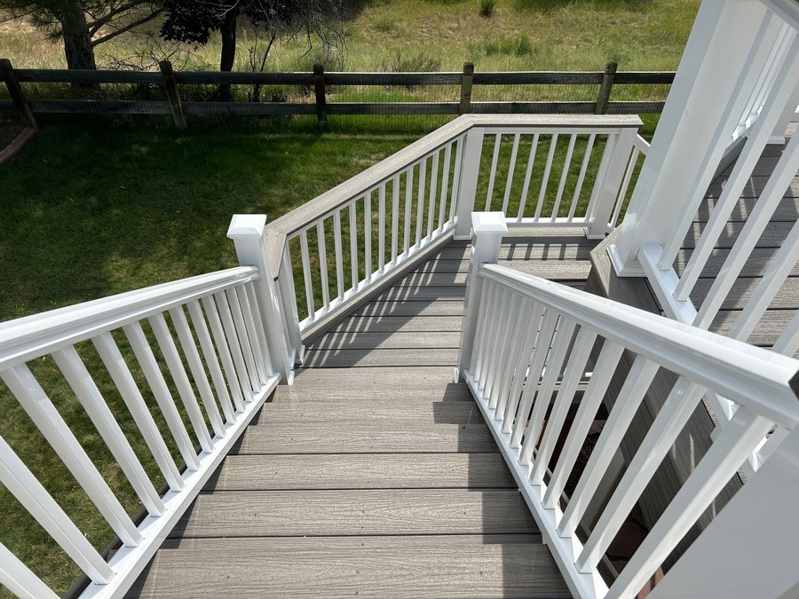
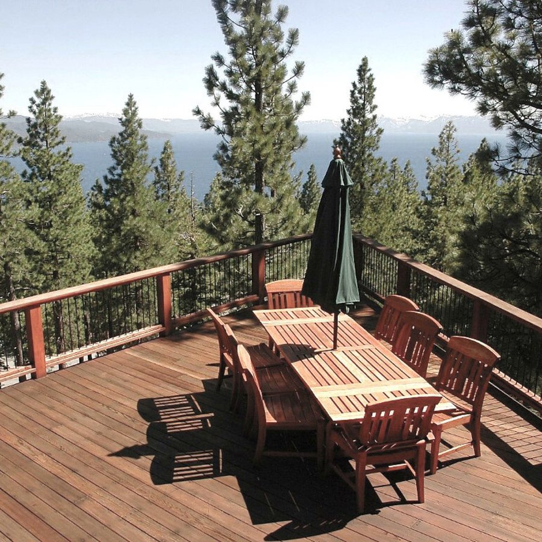

Serving Denver, Littleton, Highlands Ranch, Castle Rock and the entire Front Range — custom decks designed and built for Colorado living.
Get a Free QuoteA custom deck is one of the highest-value improvements you can make to your Colorado home. Whether you're in Denver, Littleton, Highlands Ranch, Centennial, Castle Rock, or Parker, we design and build decks that are tailored to your property, your lifestyle, and Colorado's demanding outdoor conditions.
No two yards are the same, and neither are our decks. We work directly with homeowners from the first design conversation through final inspection — so every detail is exactly what you want.

A custom deck isn't just a square platform out the back door. It's a fully designed outdoor living space built around how you actually use your yard. We design around your home's architecture, your lot's grade, your view, and your family's needs.
We design decks that work with irregular lots, sloped yards, and challenging access points common across Denver's older neighborhoods and mountain foothills.
Split-level and multi-tier decks are a popular choice for hillside homes in Littleton, Castle Rock, and the foothills — maximizing usable space without sacrificing views.
From built-in bench seating and planters to pergola attachments and outdoor kitchen rough-ins, we integrate features that make your deck a true extension of your home.
Colorado's altitude means intense UV, dramatic temperature swings, heavy snow loads, and sudden hailstorms. We recommend materials specifically suited for the Front Range climate so your deck looks great and lasts for decades.

The right features turn a deck into an outdoor room your family will use every day. We can integrate almost any feature into the original build — or add them to an existing structure.
Building decks in Colorado isn't the same as building decks anywhere else. Local knowledge matters — from navigating Denver and Jefferson County permit requirements to engineering structures that handle 100+ mph wind gusts and 30-inch snowfall events in a single season.
We pull permits and meet structural requirements for every city and county we work in — Denver, Littleton, Highlands Ranch, Castle Rock, Parker, Centennial, and beyond.
Every deck we build is engineered for Colorado's snow loads, UV intensity, and freeze-thaw cycles so your investment holds up for years to come.
We've built custom decks all across the Denver metro and Front Range. Our portfolio speaks for itself — and our references are your neighbors.